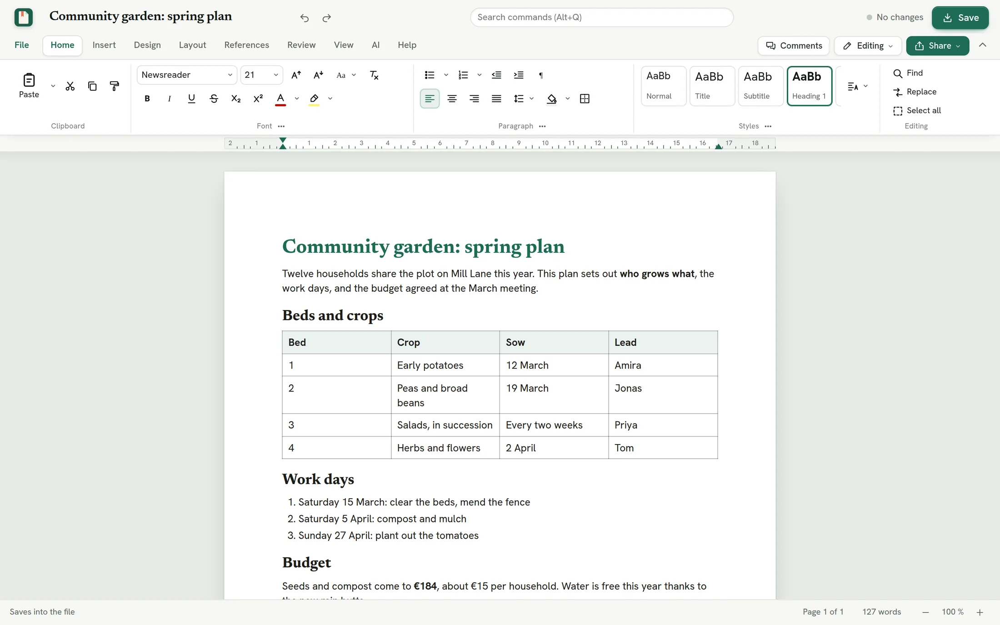
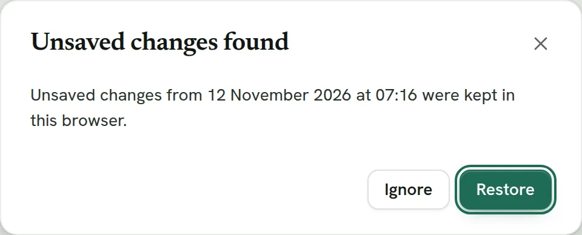
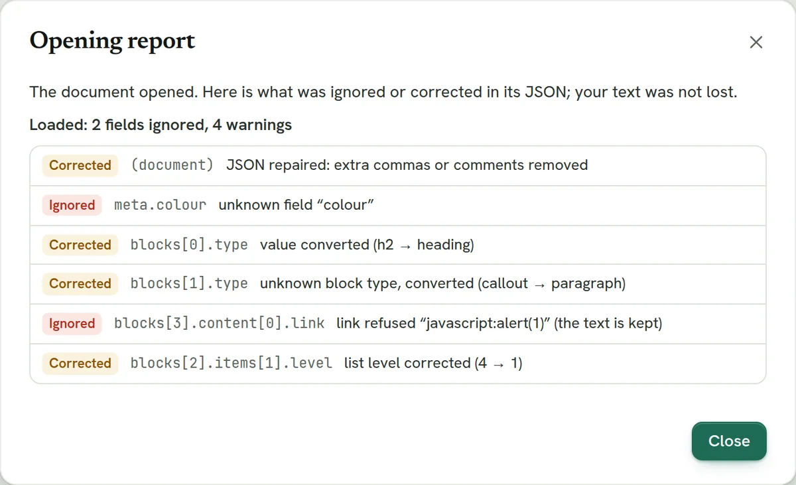
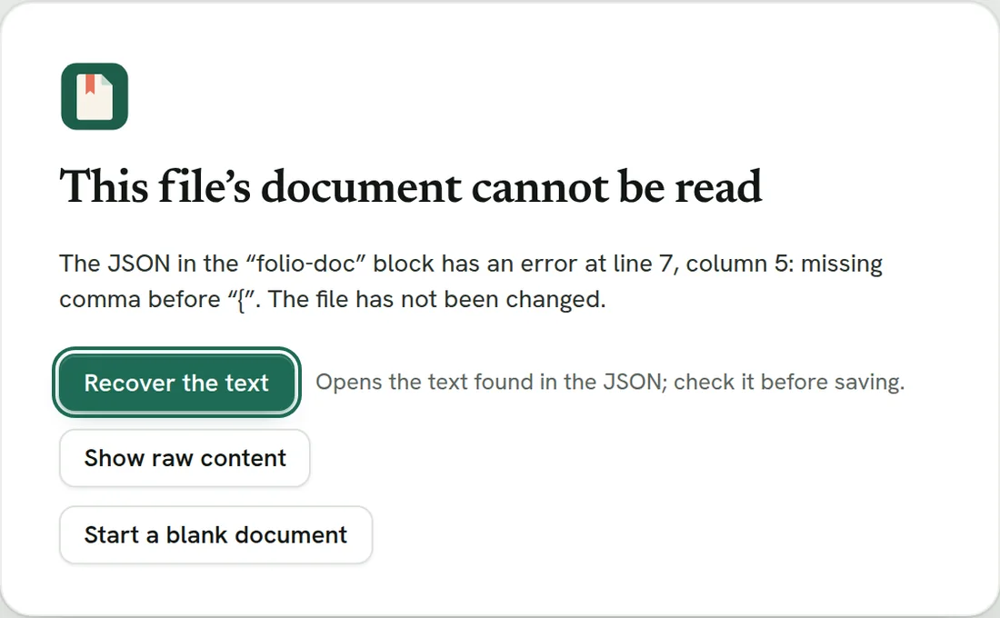
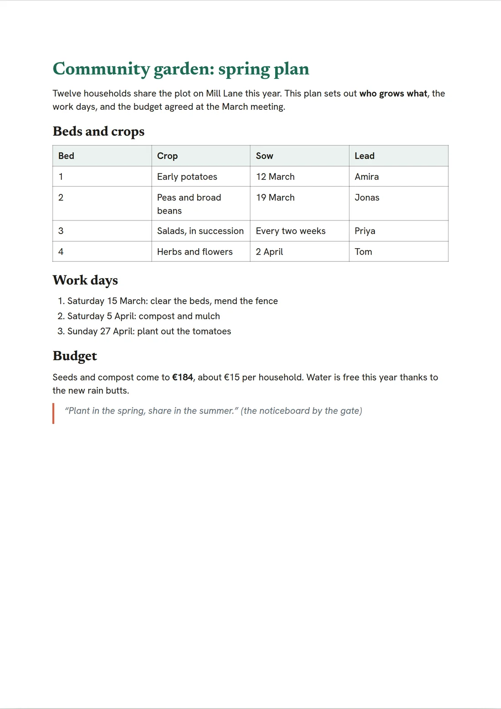
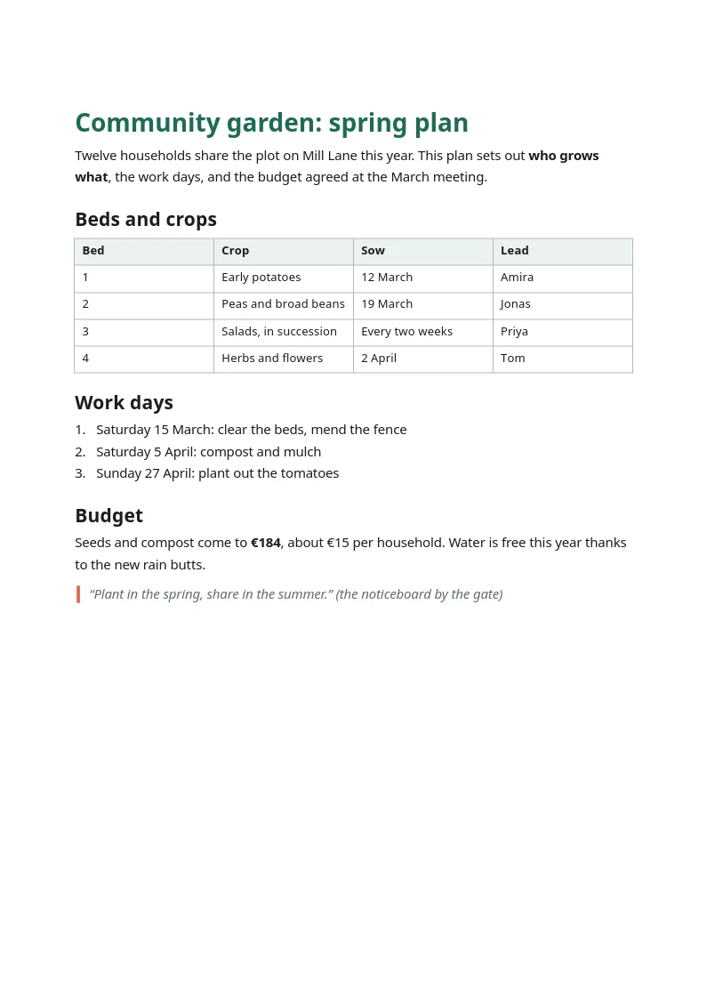
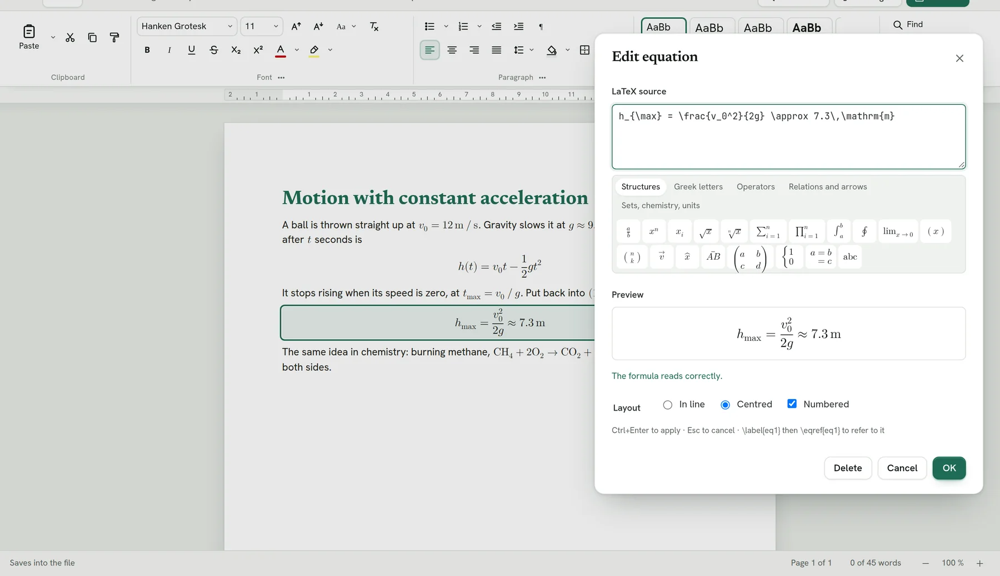
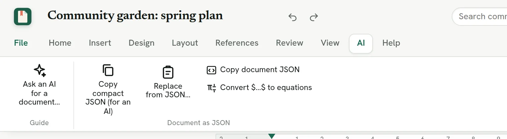

It saves into itself.
Chrome and Edge rewrite the file you opened, in place. Firefox and Safari download an up-to-date copy, and Folio Pages tells you so.
Open it in a browser, write, save. The file rewrites itself with your text. No install, no account, no server.

Every Folio Pages file carries the whole word processor, compressed, behind your document. Saving writes the file back with the new document inside and every other byte unchanged.
<head>title, icon, licence notices<!-- guide -->how an AI should fill the filefolio-docyour document, readable JSON
folio-rtthe editor, compressedfolio-rt-docxthe .docx converter, unpacked only when usedloaderunpacks and starts the editorThe parts of a word processor you only notice when they go wrong are the parts Folio Pages starts with.
Chrome and Edge rewrite the file you opened, in place. Firefox and Safari download an up-to-date copy, and Folio Pages tells you so.
Open the file in any text editor: the document is right there, as JSON a person can read.
A copy is kept in your browser while you write. Reopen the file and Folio Pages offers it back.

Every field is checked and bounded. What cannot be used is set aside and listed, line by line. Text is never thrown away.

If the JSON cannot be read, Folio Pages says where, to the line and column, and offers to recover the text it can still find.

No account, no server, no tracking. The only request the file makes on its own is an update check when it opens, with no identifier, and you can turn it off. Everything works the same on a plane as at your desk.
The converter runs inside the file, offline. Text is never dropped, and a short report lists anything that did not carry over. The same menu also writes OpenDocument (.odt) for LibreOffice, an EPUB e-book, a web page, Markdown or plain text.


Type $E = mc^2$ and it typesets as you finish it. The browser draws the maths itself (MathML), so the file stays small and the formula stays text.

\label, and \eqref keeps the reference right as the text moves.\ce, units with \pu.The Mailings tab merges a list of recipients into letters, envelopes, labels, e-mails or a directory. The list is kept inside the document, and nothing is sent anywhere. The E-mail group sends the document itself, in the message or attached, or one personalized e-mail per recipient, through your own mail app, Gmail or Outlook.com.
Citations, captions, cross-references and an index that keep themselves up to date, in the styles your teachers and journals ask for.
The file stays yours: it can be sealed with a password, cut off from the network, and translated.
Send the empty file to any AI with a one-sentence request. A guide at the top of the file tells it where the document goes and what to check before handing the file back.
No attachment in your chat? Use AI → Copy compact JSON, paste it with your request, then paste the answer into AI → Replace from JSON… One Ctrl Z takes it back.

A Claude Code plugin downloads the latest blank file and fills it:
> /plugin marketplace add EmyoTyyy/folio-pages
> /plugin install folio-pages@folio-pagesEach stage ships with its tests and a page in the built-in demo document. Version 0.7 completed the plan: password protection, mail merge, language packs, an offline switch and signed updates. Version 0.8 adds citations, captions, cross-references and an index, landscape sections, and optional online helpers. Version 0.9 adds AutoCorrect, a template gallery, and exports to OpenDocument, EPUB, web page, Markdown and plain text. Version 0.10 adds text effects, drop caps, hyphenation, watermarks, picture corrections, Go To, cover pages and signature lines. Version 0.11 adds check lists, callouts, charts, line numbers, forms, drawing, direct PDF, picture wrapping and reflection, tracked formatting, a Reviewing pane and Compare, an Outline view, an Immersive Reader, diagrams, icons, attached files, and an update check on opening. Version 0.12 adds side-to-side reading: two pages per screen, like an open book. Version 0.13 holds several documents in one file, in tabs, with links and cross-references from one to another. Version 0.14 adds picture layouts: pictures and their captions arranged as a grid, a strip, a featured picture, steps, a list or a mosaic. Version 0.15 adds shapes, text boxes and free pictures, placed anywhere on the page, with wrapping, stacking order, grouping, alignment and a Selection pane. Version 0.16 fills the Draw tab (pencil, lasso, point eraser, ink to shape, ink replay) and fits the ribbon to any window width. Version 0.17 arranges the documents of a file in folders, in a Documents pane: other files can be added to it, any document or folder can be saved as a file of its own, and export and print take a folder or any set of documents.
The single file, saving in place, crash recovery, the readable format.
Styles, themes, fonts, lists, tables, pictures, find and replace.
Real pages, margins, headers and footers, sections, columns.
Footnotes, contents, comments, tracked changes, version history.
Import and export, offline, with a report of what changed.
LaTeX typeset with the browser’s own MathML, edited with a live preview.
Password encryption, mail merge, language packs, an offline switch, signed updates.
The file is the whole application. Keep it anywhere and double-click it whenever you need a new document.
1140 KB. Every saved document is also a working copy of the app.
$ git clone https://github.com/EmyoTyyy/folio-pages
$ cd folio-pages && npm install
$ npm run build # dist/folio-pages.html
$ npm test # unit tests
$ npm run test:e2e| Browser | Since | Saving |
|---|---|---|
| Chrome, Edge, Brave, Opera | 111 | Into the file you opened |
| Firefox | 113 | Downloads an updated copy |
| Safari | 16.4 | Downloads an updated copy |